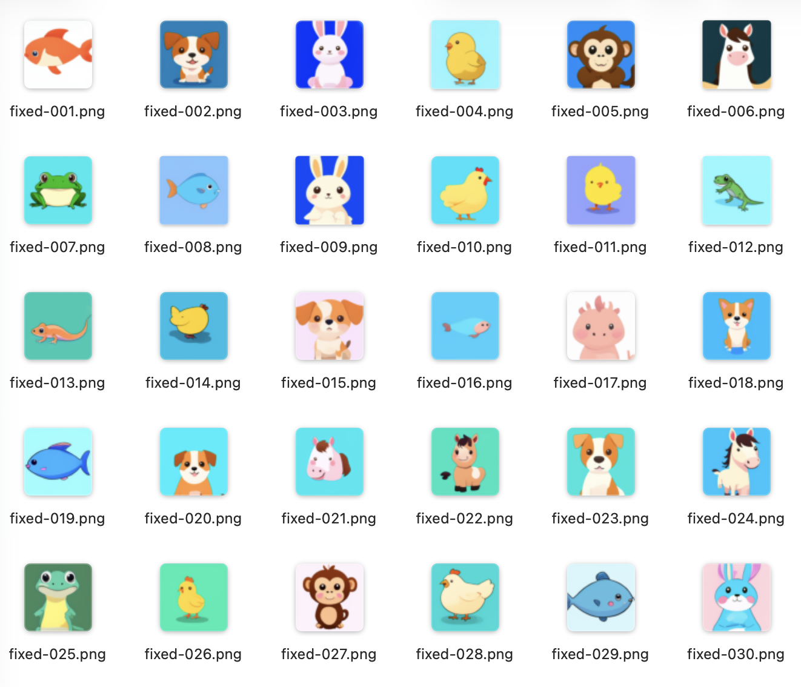
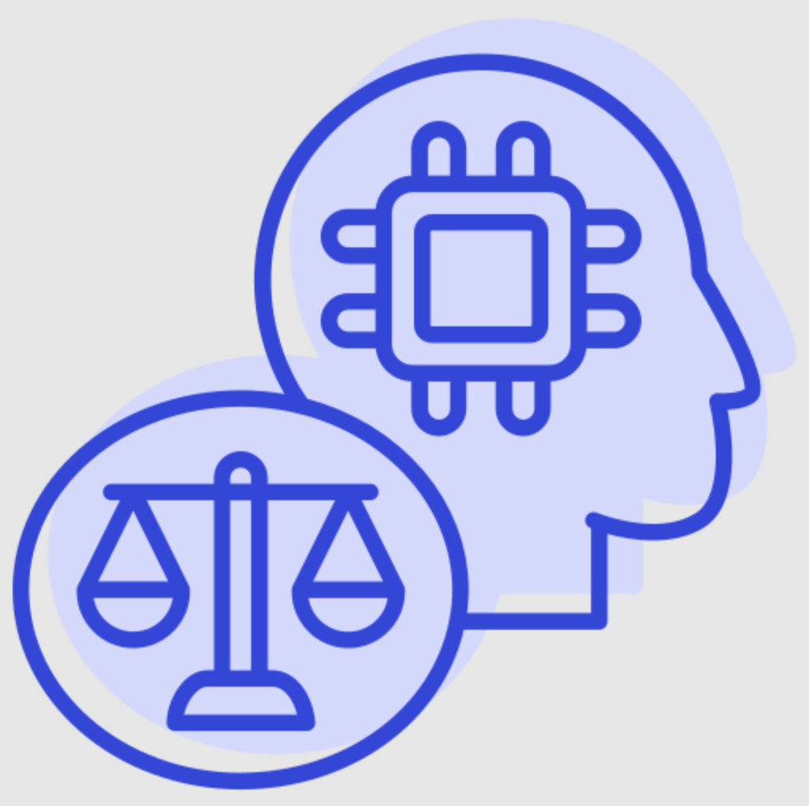
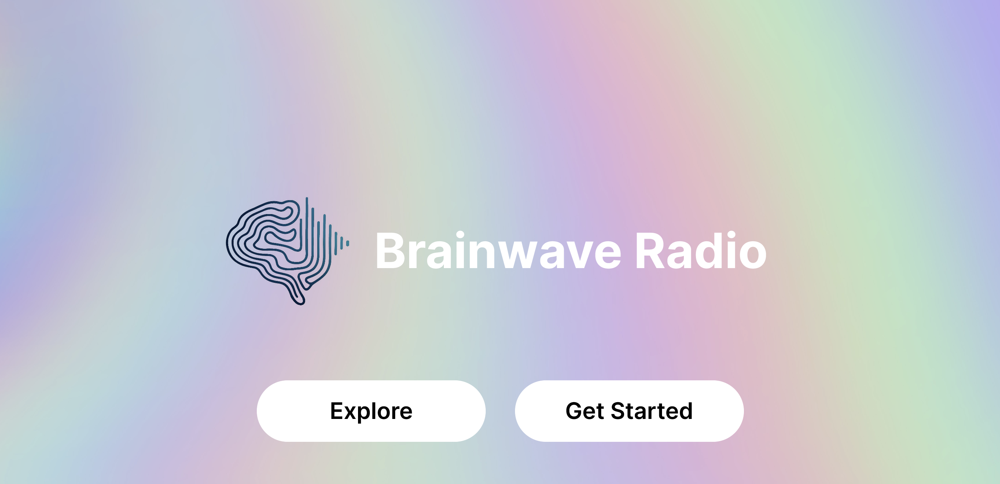
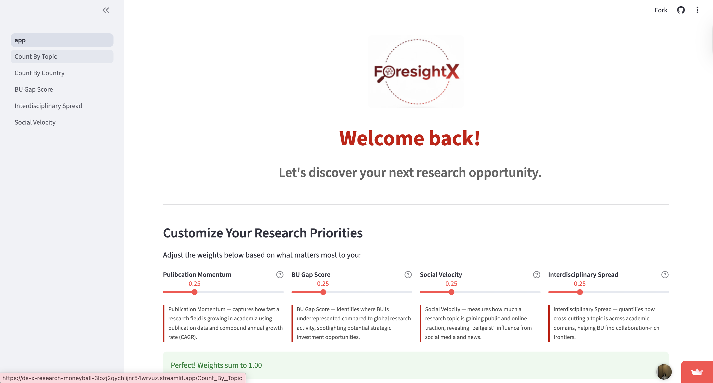
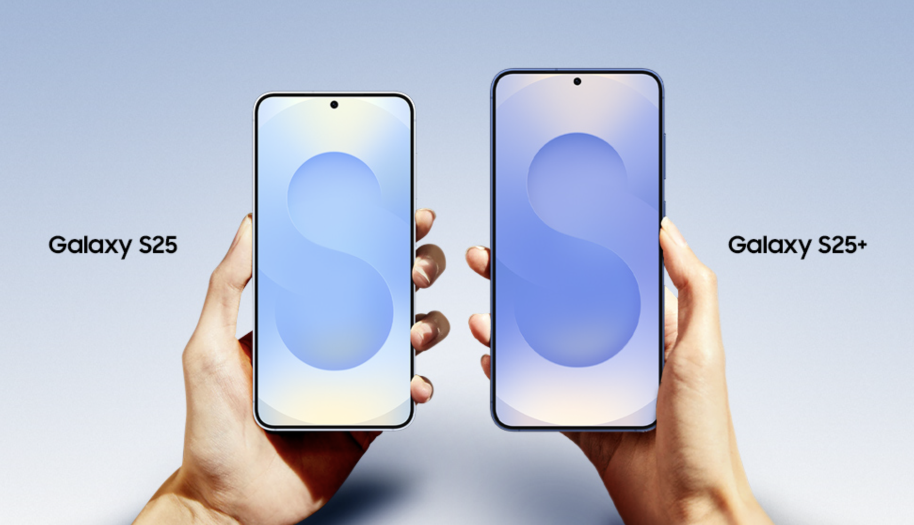
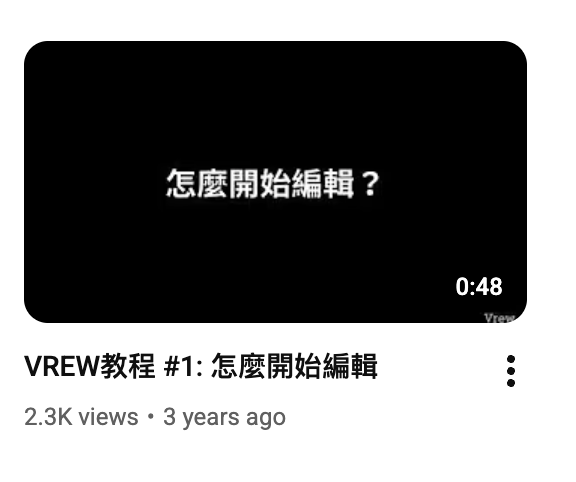
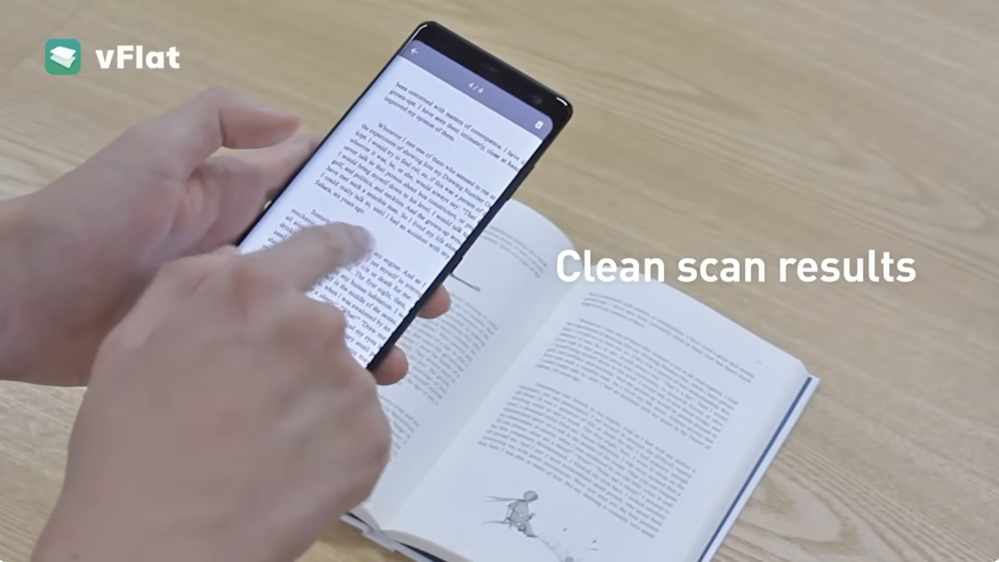

All Projects
Click on any project to learn more about my work.

CFJJ: POST Officer Disciplinary Records Analysis

SendThanks

GBH: Medical Debt Investigation

SYN-CUTE: Generate Images with DDPM

LLM Measurements for AI Ethics

Brainwave Radio

ForesightX: Research Moneyball

Satellite Networks for Galaxy S25

Live Translate for VoIP Apps for Galaxy Z Flip 6, Fold 6

Call Auto Answer Assistant for Galaxy S24 and earlier models (China)
SPAM/SCAM Prevention for Galaxy S24 and earlier models (China)

New Market Launch for Vrew

Localization for Taiwanese Users
